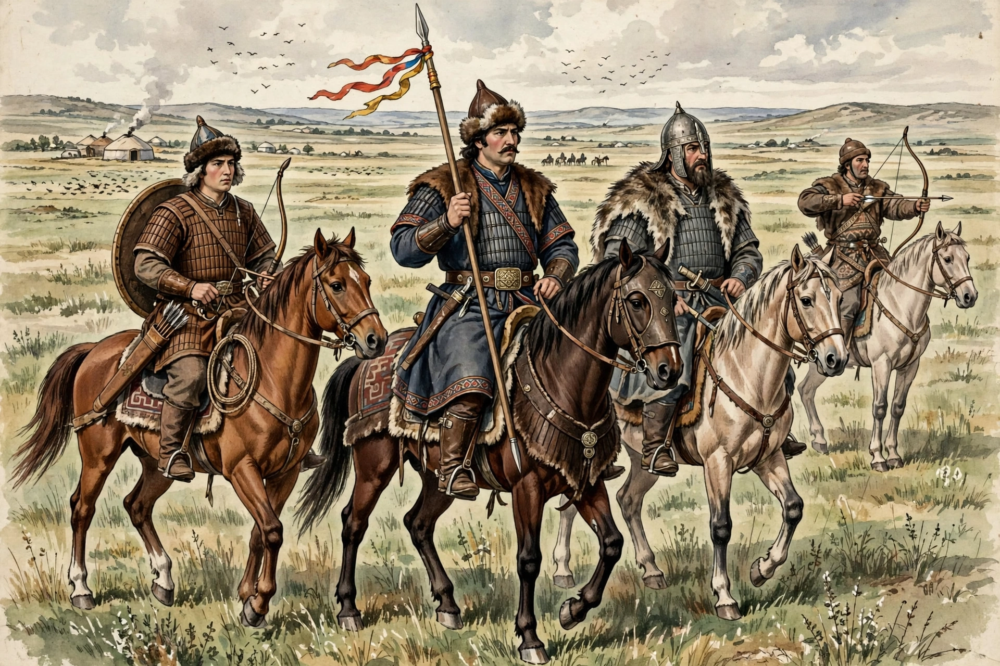

 The Madara Rider, associated with the early Bulgars | |
| Regions | Eurasian steppe; Balkans; Volga region |
|---|---|
| Languages | Bulgar (Oghuric Turkic, extinct) |
| Religion | Originally Tengrism; later Islam and Orthodox Christianity |
| States | Old Great Bulgaria; Volga Bulgaria; First Bulgarian Empire |
| Period | c. 5th–10th centuries |
The Bulgars (also spelled Bolgars) were a semi-nomadic Turkic people who flourished on the Pontic–Caspian steppe and the Volga region between the 5th and 7th centuries CE. They spoke an Oghuric Turkic language, now extinct. Following the collapse of their state of Old Great Bulgaria in the 7th century, Bulgar groups migrated in several directions: some to the middle Volga, where they founded Volga Bulgaria, and others under Asparuh to the Danube frontier of the Byzantine Empire, where in 681 they established the state that became the First Bulgarian Empire — the ancestor of modern Bulgaria, whose name they gave to the country.
The Bulgars emerged from the tribal confederations of the western Eurasian steppe in the aftermath of the Hunnic empire. Byzantine and Armenian sources mention them from the late 5th century as raiders and mercenaries along the Danube. In the 630s the khan Kubrat united the Bulgar tribes into the polity historians call Old Great Bulgaria, centred between the Dnieper and the Kuban.
After Kubrat's death, pressure from the Khazars broke the confederation apart. According to tradition, Kubrat's sons led the tribes in different directions: Batbayan remained and submitted to the Khazars; Kotrag migrated to the Volga, founding Volga Bulgaria (which adopted Islam in the 10th century and was destroyed by the Mongols in 1236); and Asparuh crossed the Danube, defeated a Byzantine army in 680, and concluded a treaty with Constantinople in 681 recognizing his state south of the Danube.
In the Balkans the Bulgars merged over generations with the Slavic population and the local Thracian heritage, adopting a Slavic language while retaining the Bulgar name. The First Bulgarian Empire under khans and later tsars such as Krum, Boris I (who adopted Orthodox Christianity in 864), and Simeon I became a major power and a centre of Slavic literacy, developing the Cyrillic script.
The Bulgar language died out in both regions — replaced by Slavic in the Balkans and by Kipchak Turkic on the Volga — but survives in inscriptions, loanwords, and the Chuvash language, considered its closest living relative. The Bulgars' name lives on in Bulgaria and in the Volga Tatars' and Chuvash scholarly traditions of descent.